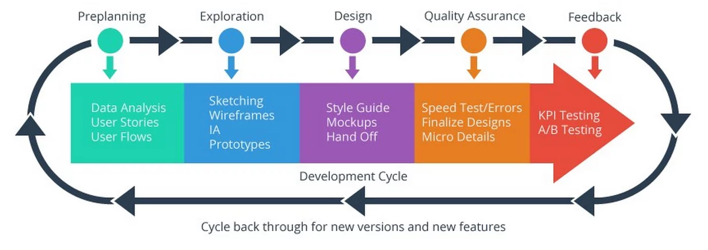

10.10.2017 ELIS LAASIK
UX - two letters, which don’t mean anything to most people, but are the rising stars of the web development world. UX stands for User eXperience (further used the shortened version UX) and as we might have guessed, it is related to using users experience to create a product or a service. How to create a good product, which gives the most value for the customer. UX designers are people, who use UX techniques to better a webpage, product or a service.
UX can be traced back to the late 19th century when the first improvements to products were made by users, but now it has started to play a greater role than ever before in web design. Web design in 2017 is all about efficiency. It is used to make products as good as possible from the users perspective.
How UX process works? All UX is based on users and making them happy with the product and its usage. Research is the keyword here. What do the users really want, for example in an online store the users want an easier purchase layout, UX designers need to find out what the users actually want to change about it and then design a solution accordingly. Testing the solution is also a large part of the end result.
Why – is the main question that needs to be answered during the making of a UX-based solution. Why do the users need something and how can we prove it is what they actually want? According to the three why’s method, we need to ask “why” three times to get to the core of the problem.
There are three main components in UX design:
- LOOK
- FEEL
- USABILITY
Look is what makes people use a product and it should stand out, but at the same time it should go together with the theme of the product. Design shouldn’t shine so much that the product itself is shadowed by the design of the webpage, where it’s sold.
Feel of a product defines, how it feels to use the product from starting to search for it until buying it to use it. Does the product make us feel good? This whole experience makes the largest difference from purchasing to not being interested in it at all.
Lastly usability is the third most important component of an UX-based product. Usage of a product can determine its success and it goes to the whole process from searching, buying to actually using the item. Are all aspects of the product comfortable to use?
All of these together are supposed to create a pleasurable experience for the user: smooth without gaps and errors. Look, feel and usability are supposed to bring the product together and these three components should be well balanced in a good product.
UX is all around us, all we have to do is see from users’ perspective. All everyday items have been through the UX process, some more than others. When finding a good item, we should think for a moment, what is so good about it, so we could use the great ideas in our work in the future.